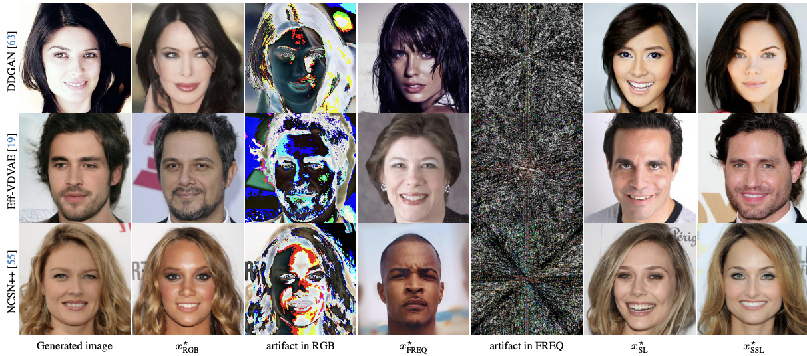
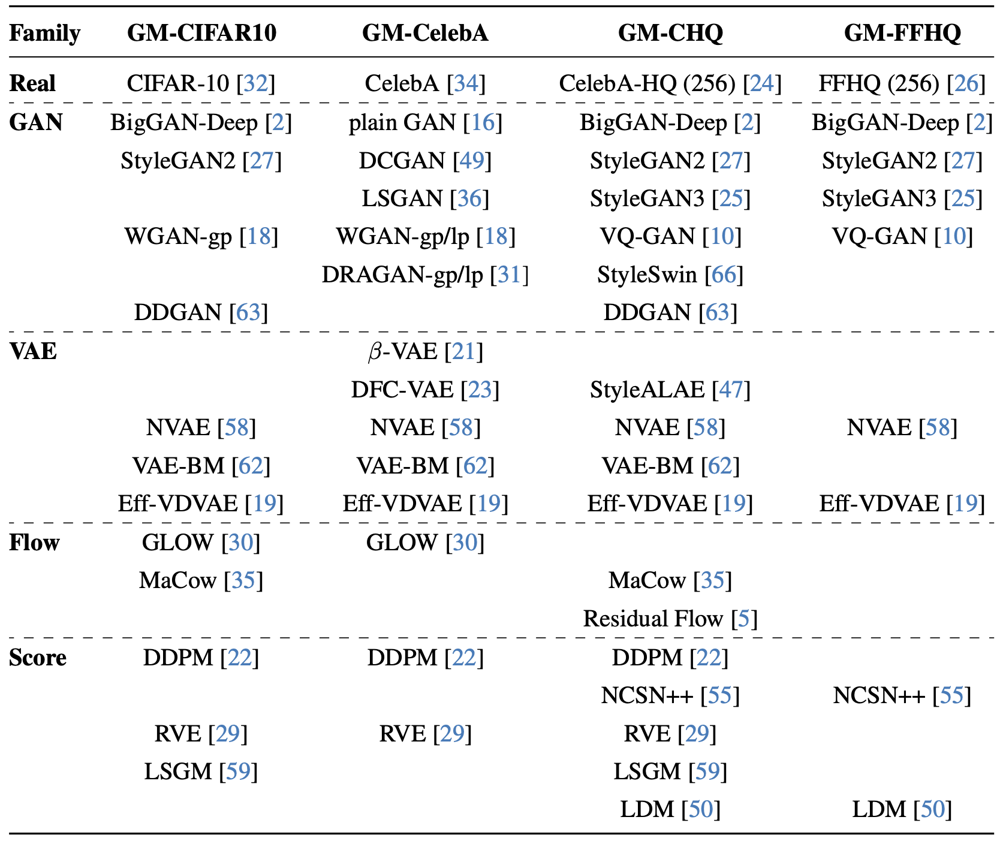
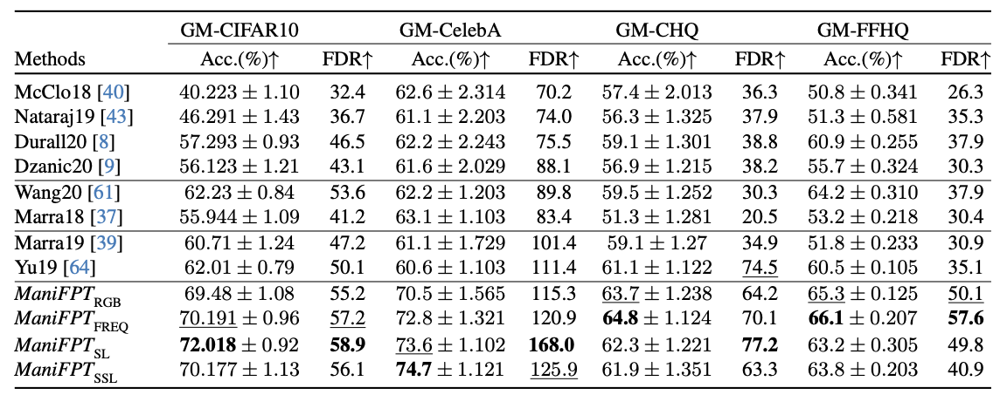
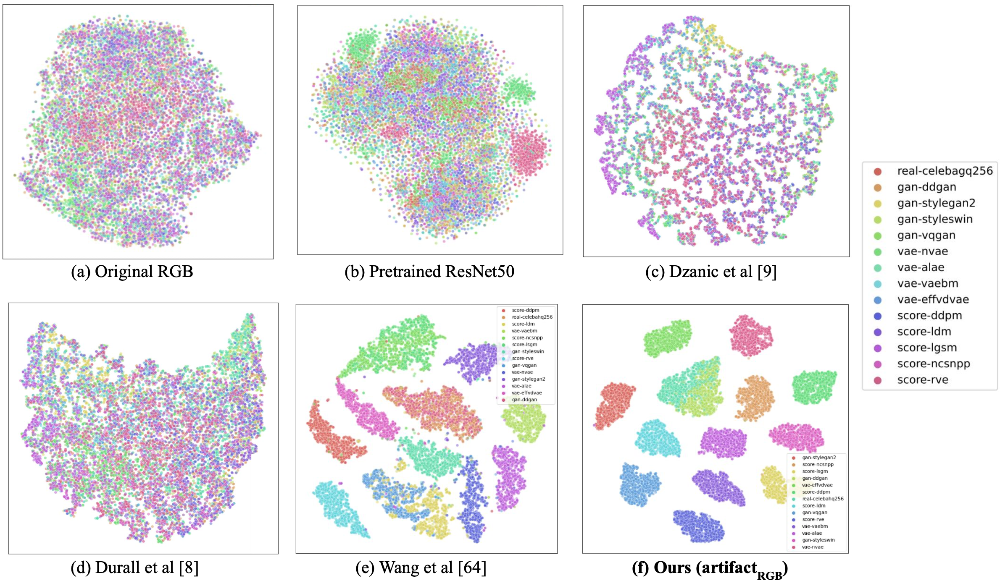
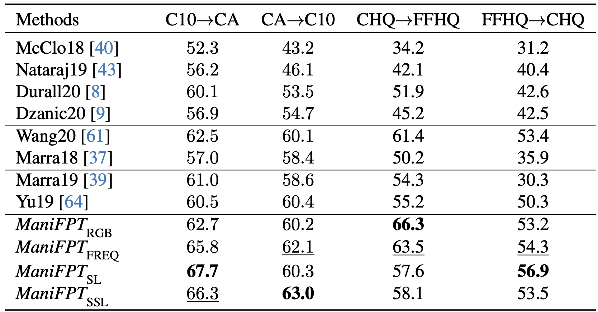

Recent works have shown that generative models leave traces of their underlying generative process on the generated samples, broadly referred to as fingerprints of a generative model, and have studied their utility in detecting synthetic images from real ones. However, the extend to which these fingerprints can distinguish between various types of synthetic image and help identify the underlying generative process remain under-explored. In particular, the very definition of a fingerprint remains unclear, to our knowledge. To that end, in this work, we formalize the definition of artifact and fingerprint in generative models, propose an algorithm for computing them in practice, and finally study its effectiveness in distinguishing a large array of different generative models. We find that using our proposed definition can significantly improve the performance on the task of identifying the underlying generative process from samples (model attribution) compared to existing methods. Additionally, we study the structure of the fingerprints, and observe that it is very predictive of the effect of different design choices on the generative process.

We visualize artifacts in generated images under our manifold-based definition (see Sec. 3.1). Each row shows an original image generated by a generative model, followed by its projection to data manifolds in RGB (x*RGB), Frequency (x*FREQ), and learned feature spaces of SL (x*SL) and SSL (x*SSL). The third and fourth columns show our definition of artifacts in the RGB and frequency spaces, respectively. Note that artifacts in SL and SSL spaces are not shown as they are 2048-long vectors (in the embedding space of a pretrained ResNet50).

Our experimental dataset of generation models.
We collect images from a diverse set of generative models trained on four
different datasets (CIFAR10, CelebA, CelebA-HQ(256), FFHQ(256)) and study model fingerprints and their attributability.
Real: training datasets of the generative models.
Score: score-based (aka. diffusion) models.
a.
We evaluate different artifact features on the task of predicting the source generative model
of a generated sample.
Separability of the feature spaces are measured in FD ratio (FDR).
Higher FDR means better separability.
Our methods (ManiFPT) based on the proposed definition of artifacts outperform all baseline methods on four
different datasets.


We evaluate how well baselines and our fingerprints generalize across training datasets. We consider two scenarios: (i) generaliza- tion across GM-CIFAR10 and GM-CelebA, and (ii) generalization across GM-CHQ and GM-FFHQ. For each case, we train attribu- tion methods on one set of generative models (e.g. GM-CIFAR10) and test on a different set of models (e.g. GM-CelebA). Our artifact-based attribution method outperforms all baseline methods in both scenarios.

We study the structure of GM fingerprints by studying the alignment of their clustering pattern to the hyperparameters used in the design of generative models (e.g., type of up/down-sampling, normalization and loss function). Overall, we observe that upsampling and loss functions best match the clustering of GM artifacts, experimentally confirming the general intuition about the sources of limitations in generative models and supporting the utility of our definitions in studying the model behaviors.
@misc{song2024manifpt,
title={ManiFPT: Defining and Analyzing Fingerprints of Generative Models},
author={Hae Jin Song and Mahyar Khayatkhoei and Wael AbdAlmageed},
year={2024},
eprint={2402.10401},
archivePrefix={arXiv},
primaryClass={cs.LG}
}